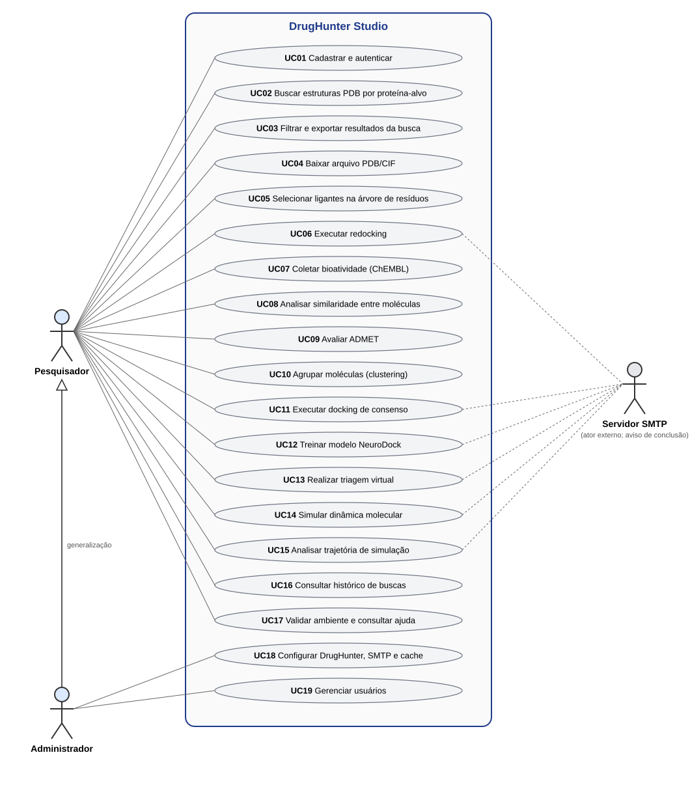

Visão geral¶
Problema¶
O DrugHunter cobre todo o fluxo de triagem virtual de fármacos (recuperação de dados, pré-análise, docking,
inteligência artificial e dinâmica molecular), porém exige que o usuário seja programador: não há CLI nem arquivo
de configuração central; cada etapa é um script de exemplo em workflow/ cujos argumentos são editados à mão
(DH/workflow/*/NN-*.py). Pesquisadores de áreas como biologia e farmácia ficam, na prática, fora do alcance da ferramenta.
Proposta¶
O Studio é uma camada de acessibilidade sobre o DrugHunter. Seus princípios de projeto:
- Interface, não motor — o Studio não reimplementa análises científicas; chama o DrugHunter por subprocesso.
- Fidelidade ao fluxo original — desvios do DrugHunter são mínimos, documentados e justificados.
- Mínimo de digitação e de decisões — valores padrão sensatos, pré-preenchimento entre etapas, validação de ambiente.
- Portabilidade — caminhos relativos, instalação com poucos passos (pacote
.debe instalador Windows).
Estudo de caso
Para o PFC, a validação é feita escolhendo um organismo-alvo e percorrendo o pipeline do início ao fim pela interface.
Atores¶
| Ator | Descrição |
|---|---|
| Pesquisador | Usuário-alvo: não programador. Executa buscas, jobs e analisa resultados. |
| Administrador | Pesquisador com permissões extras: configura caminhos do DrugHunter, SMTP, TTL do cache e gerencia usuários. O primeiro usuário cadastrado vira administrador automaticamente (services/auth.py:34). |
| Servidor SMTP | Sistema externo que envia o e-mail de conclusão de jobs longos. |
| RCSB PDB / ChEMBL | Fontes de dados externas. |


Casos de uso¶


| Código | Caso de uso | Rota no frontend | Módulo |
|---|---|---|---|
| UC01 | Cadastrar e autenticar | / |
Autenticação |
| UC02 | Buscar estruturas PDB por proteína-alvo | /busca-pdb |
Busca RCSB |
| UC03 | Filtrar e exportar resultados | /busca-pdb |
Dashboard |
| UC04 | Baixar arquivo PDB/CIF | /busca-pdb, /meus-pdbs |
Download |
| UC05 | Selecionar ligantes (árvore de resíduos) | /visualizador/:pdb_id |
Visualizador |
| UC06 | Executar redocking | /redocking |
Redocking |
| UC07 | Coletar bioatividade no ChEMBL | /chembl |
ChEMBL |
| UC08 | Analisar similaridade entre moléculas | /chembl/:jobId/resultados |
Análise molecular |
| UC09 | Avaliar ADMET | /admet/:resultId |
ADMET |
| UC10 | Agrupar moléculas (clustering) | /clustering/:jobId |
Clustering |
| UC11 | Executar docking de consenso | /consensus/:jobId |
Consenso |
| UC12 | Treinar modelo NeuroDock | /neurodock |
NeuroDock |
| UC13 | Realizar triagem virtual | /neurodock/:modelId |
NeuroDock |
| UC14 | Simular dinâmica molecular | /dinamica-molecular |
MD |
| UC15 | Analisar trajetória | /dinamica-molecular/:jobId |
Análise MD |
| UC16 | Consultar histórico de buscas | /busca-pdb, /historico/:id |
Histórico |
| UC17 | Validar ambiente e consultar ajuda | /ajuda, /home |
Ajuda |
| UC18 | Configurar DrugHunter, SMTP e cache | /configuracoes |
Administração |
| UC19 | Gerenciar usuários | /configuracoes |
Administração |
Requisitos funcionais¶
| ID | Requisito | Evidência |
|---|---|---|
| RF01 | Autenticar com e-mail ou nome de usuário; sessão por JWT (access 60 min, refresh 7 dias) | core/security.py, usecases/auth.py |
| RF02 | Buscar estruturas por proteína com progresso em tempo real e cache compartilhado | routes/search.py, SSE |
| RF03 | Filtrar por organismo, resolução, ligante; exportar CSV; baixar PDB/CIF individual ou em lote | DashboardTemplate, hooks/useDashboard.ts |
| RF04 | Navegar pela estrutura (átomos/ligantes/resíduos) e montar pdb_codes.csv |
ResidueTree, VisualizadorContext |
| RF05 | Executar o pipeline CADD (redocking, ChEMBL, ADMET, clustering, consenso, NeuroDock, MD) como jobs assíncronos | módulos em Fluxos |
| RF06 | Acompanhar status de cada job e ser avisado por e-mail na conclusão | polling + email_sender.py |
| RF07 | Visualizar resultados (tabelas, gráficos, estruturas 2D/3D) | Frontend |
| RF10 | Cancelar um job em andamento, em qualquer módulo | POST /api/jobs/{kind}/{id}/cancel, infra/job_control.py |
| RF08 | Validar o ambiente do DrugHunter (caminhos, ferramentas) e orientar a correção | GET /api/admin/validar-drughunter |
| RF09 | Administrar usuários, cache (TTL) e SMTP | routes/admin.py |
Requisitos não funcionais¶
| ID | Requisito | Situação atual |
|---|---|---|
| RNF01 | Usabilidade para não programadores (ISO 9241-11) | A validar — ver Usabilidade |
| RNF02 | Acessibilidade WCAG 2.2 AA | Parcial — ver Acessibilidade |
| RNF03 | Portabilidade (Linux e Windows) | .deb e instalador NSIS; DrugHunter e ferramentas externas continuam pré-requisitos |
| RNF04 | Desempenho: interface não bloqueia durante jobs longos | Jobs em threads/subprocessos + polling |
| RNF05 | Segurança: autenticação, segredos criptografados, isolamento por usuário | JWT, Fernet para senha SMTP, jobs filtrados por user_id — ver Segurança |
| RNF06 | Manutenibilidade: camadas e baixo acoplamento | Hexagonal (backend) e camadas com DI manual (frontend) |
| RNF07 | Testabilidade | Testes automatizados fora do escopo do PFC; a validação é por acessibilidade, usabilidade e estudo de caso (ver Validação) |
Tecnologias¶
| Camada | Tecnologia |
|---|---|
| Frontend | React 18, TypeScript 5.9 (strict), Vite 5, Tailwind CSS 4, React Router 6, Recharts 2, NGL 2.5, smiles-drawer 2.4, PapaParse, Yup |
| Backend | Python, FastAPI, SQLAlchemy 2, Pydantic v2, python-jose (JWT), passlib/bcrypt, pandas |
| Banco | SQLite (WAL, foreign_keys=ON); PostgreSQL previsto para produção |
| Tempo real | Server-Sent Events (somente na busca PDB); polling nos demais módulos |
| Empacotamento | .deb (build.sh), NSIS (build-windows.sh) |
| Motor científico (externo) | DrugHunter: RDKit, AutoDock Vina, Dock6, UCSF Chimera, OpenMM, OpenBabel, PyMOL, TensorFlow/Keras, Optuna |